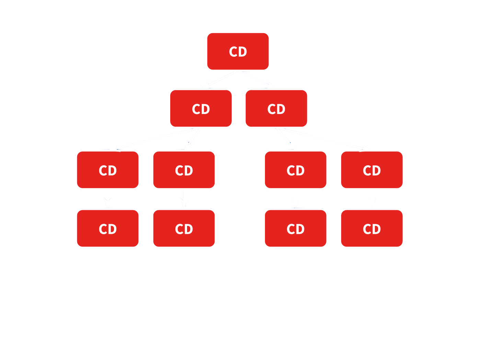
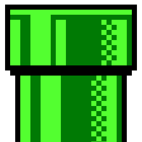
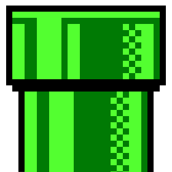

Can you spot the differences?
Angular Change Detection
Each component has it's own change detector
Change detection strategies
Default vs OnPushDefault: Dirty checking
OnPush

Always prefer this strategy
✨ Directive Types
 UI Components
UI Components
 Attribute Directives
Attribute Directives
 Structural Directives
Structural Directives
Attribute Directives
Change the appearance or behavior of an element, component, or another directive.
Built-in directives
ngStyle
<div [ngStyle]="{'font-size': isLarge ? '50px' : '12px'}"> Conditional font size </div>ngClass
<div [ngClass]="{'first': true, 'second': true, 'third': false}"> Conditional classes </div>
Custom Attribute Directive
Structural Directives
Shape or reshape the DOM's structure, typically by adding, removing, or manipulating elements.
Built-in directives
*ngIf
<div *ngIf="condition">⚡️⚡️⚡️</div>*ngFor
<ul> <li *ngFor="let index of [0,1,2,3,4]">{{index}}</li> </ul>
*ngFor: Tracking changes
app.componnet.html<li *ngFor="let item of items;">{{item}}</li> <li *ngFor="let item of items; trackBy: trackByFn;">{{item}}</li>app.componnet.tstrackByFn(index: number; item: Item) { return item.id; }
The * prefix is just a syntactic sugar
<ng-template> - An Angular element that never displayed directly. Before rendering the view, Angular replaces its block with a comment.<div *ngIf="condition">⚡️⚡️⚡️</div>same as:<ng-template [ngIf]="condition"> <div>⚡️⚡️⚡️</div> </ng-template>
Custom Structural Directive
 Pipes
Pipes
A declarative way to write display-value transformations in your HTML.
Built-in pipes
date
<p>{{ new Date() | date:'MM/dd/yy' }}</p> //"10/03/18"currency
<p>{{ 32.99 | currency:'CAD'}}</p> //"CA$32.99"json
<p>{{ {a: 1, b: '2'} | json}}</p> //"{"a":1,"b":"2"}"
Writing custom pipe
🧘 Pure vs. 👹 Impure
A Pure function is a function that its return value is the same for the same arguments and it has no side effects.Pure
const sum = (a,b) => a + b; sum(1, 1); // 2 sum(1, 1); // 2 sum(1, 1); // 2Impure
const sum = (() => { let a = 0; return (b) => a += b;} )(); sum(1); // 1 sum(1); // 2 sum(1); // 3
🎢 Mutable vs. 🏄 Immutable
Mutable
const mutablePush = (arr, item) => { arr.push(item); return arr; }; const arr = [1,2,3]; const arr2 = mutablePush(arr, 4); console.log(arr === arr2); // trueImmutable
const immutablePush = (arr, item) => { return [...arr, item]; }; const arr = [1,2,3]; const arr2 = immutablePush(arr, 4); console.log(arr === arr2); // false
Pipe purity
@Pipe({ name: 'timer', pure: true, // default: true }) export class TimerPipe implements PipeTransform { transform(time: { minutes: number; seconds: number }) { return `${time.minutes} : ${time.seconds}`; } }let currentTime = { minutes: 22, seconds: 13 };<span>{{currentTime | timer}}</span> // RESULT: "22:13"currentTime.minutes = 23; //input mutation<span>{{currentTime | timer}}</span>RESULT: "22:13" currentTime = { minutes: 23, seconds: 13 }; //new instance<span>{{currentTime | timer}}</span>RESULT: "23:13"
The Async pipe
Subscribes to an Observable or Promise and returns the latest value it has emitted.const httpRes = fetch('/cats'); // this returns a promise <p>{{ httpRes | async }}</p> //Render once the promise resolves
*We will learn more about observables in the next lesson
Action Time

CardComponent
- Cleaner code: switch getClasses() with [ngClass].
- Performance: modify change detection to OnPush.
BoardComponent
- Cleaner code: Render cards dynamically using *ngFor.
- Performance: Track cards changes using card.id value.